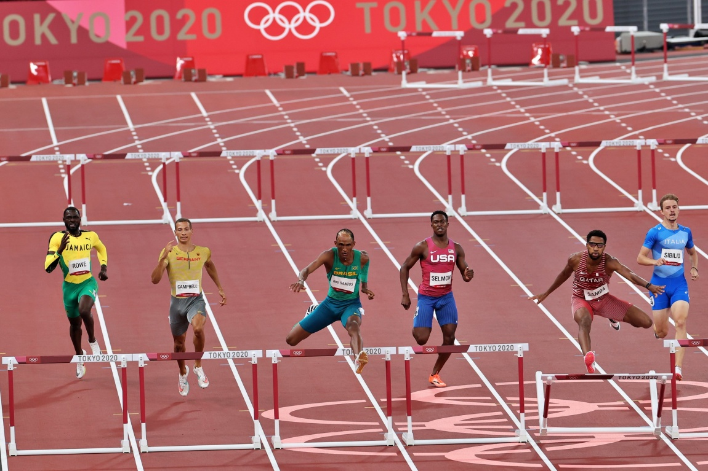

Alison dos Santos é um dos maiores nomes da história do atletismo brasileiro. Especialista nos 400 metros com barreiras, o paulista conhecido como Piu construiu uma trajetória marcada por evolução acelerada, recordes continentais, títulos internacionais e confrontos memoráveis contra alguns dos atletas mais rápidos de todos os tempos.
Nascido em 3 de junho de 2000, em São Joaquim da Barra, no interior de São Paulo, Alison Brendom Alves dos Santos saiu de um projeto social para alcançar os principais pódios do esporte mundial.
Mais do que os resultados, a carreira dele chama atenção pela maneira como foi construída. O brasileiro combina velocidade de velocista, resistência de um maratonista para sustentar o ritmo durante uma volta completa na pista, técnica para transpor as barreiras e capacidade de competir sob enorme pressão. Essa soma de qualidades explica por que ele se tornou presença constante nas maiores decisões do atletismo.
O início da trajetória
Começou no atletismo aos 14 anos. Antes de entrar definitivamente nas pistas, praticava judô e demorou alguns meses para aceitar o convite de um amigo para conhecer o projeto social do Instituto Edson Luciano Ribeiro.
Foi nesse ambiente que o jovem passou a ser chamado de Piu. O apelido, recebido ainda no início da formação esportiva, ganhou força entre colegas e treinadores e acabou acompanhando o atleta em toda a carreira. Para os familiares, porém, Alison também é conhecido como Teco.
A infância foi marcada por um grave acidente doméstico. Quando tinha apenas 10 meses, uma panela com óleo quente caiu sobre ele, provocando queimaduras de terceiro grau na cabeça, na testa, no braço e nas costas. As cicatrizes fizeram com que Alison se tornasse uma criança tímida e usasse bonés para escondê-las. Anos depois, o atletismo ajudaria a transformar sua relação com a própria imagem e com a exposição pública.
A primeira competição já apresentou sinais de seu potencial. Alison disputou o Campeonato Brasileiro Sub-16 nos 300 metros com barreiras e conquistou uma medalha. A experiência mudou o rumo de sua vida: ele passou a frequentar pódios estaduais e nacionais, entrou no radar da seleção brasileira e começou uma ascensão que seria extremamente rápida.
A mudança para São Paulo e a evolução técnica
No fim de 2017, Alison deixou São Joaquim da Barra para morar na capital paulista e treinar no Esporte Clube Pinheiros. A parceria com o treinador Felipe de Siqueira tornou-se uma das bases de sua evolução.
A mudança representou um salto de estrutura e competitividade. Piu passou a enfrentar adversários mais fortes, teve acesso a um trabalho técnico especializado e desenvolveu aspectos fundamentais para os 400 metros com barreiras, como distribuição de ritmo, contagem de passadas, ajuste de perna de ataque e capacidade de manter a técnica mesmo sob fadiga.
Em 2017, ele já havia integrado a seleção brasileira no Mundial Sub-18 de Nairóbi, no Quênia, conquistando o ouro no revezamento 4x400 metros misto. No ano seguinte, correu os 400 metros com barreiras abaixo dos 50 segundos pela primeira vez e ganhou a medalha de bronze no Mundial Sub-20 de Tampere.
A temporada de 2019 confirmou que ele não era apenas uma promessa. O brasileiro quebrou repetidamente os recordes nacionais e sul-americanos da categoria sub-20, venceu os Jogos Pan-Americanos de Lima e chegou à final do Mundial adulto de Doha. Aos 19 anos, terminou em sétimo lugar, competindo contra os principais nomes da prova.
A complexidade da modalidade
Os 400 metros com barreiras reúnem elementos de velocidade, resistência, técnica e estratégia. Os atletas completam uma volta inteira na pista e precisam superar dez obstáculos distribuídos ao longo do percurso.
Não basta ser rápido nos 400 metros rasos. O barreirista precisa encaixar um número planejado de passadas entre os obstáculos, manter o equilíbrio durante os saltos e administrar a perda natural de força nos metros finais. Qualquer erro pode alterar o ritmo da corrida, obrigar uma troca de perna ou provocar contato com a barreira.
Piu se destaca justamente pela capacidade de combinar velocidade de base com eficiência técnica. O brasileiro também apresenta rendimento de alto nível nos 400 metros rasos, distância que utiliza para desenvolver potência, resistência de velocidade e controle de ritmo. Em sua carreira, já completou a prova sem barreiras abaixo dos 45 segundos, marca reservada a velocistas de elite.
A histórica primeira medalha olímpica
O primeiro grande momento de consagração internacional aconteceu nos Jogos Olímpicos de Tóquio. Na final dos 400 metros com barreiras, Alison terminou em terceiro lugar, com 46s72, quebrando o recorde sul-americano.
A prova entrou para a história do atletismo. O norueguês Karsten Warholm venceu com o recorde mundial de 45s94, enquanto o norte-americano Rai Benjamin ficou com a prata ao marcar 46s17. O tempo de Piu seria suficiente para quebrar o antigo recorde mundial da prova, mas terminou como a terceira melhor marca daquela final extraordinária.
O bronze também teve enorme importância para o Brasil. Alison tornou-se o primeiro brasileiro a subir individualmente a um pódio olímpico em uma prova de pista desde Joaquim Cruz, medalhista dos 800 metros em Seul, em 1988.
Além do resultado, a reação espontânea de Piu após a corrida ampliou sua popularidade. Sorridente, comunicativo e emocionado, o atleta apresentou ao grande público uma personalidade diferente do menino tímido que escondia as cicatrizes durante a infância.
O título mundial e o recorde
Depois do bronze olímpico, Alison entrou na temporada de 2022 como um dos favoritos da prova. A expectativa era de mais um grande confronto com Karsten Warholm e Rai Benjamin, mas o brasileiro assumiu o protagonismo.
Na final do Mundial de Eugene, nos Estados Unidos, Piu fez uma corrida tecnicamente precisa. Controlou o início, cresceu na curva final e abriu vantagem na reta decisiva. Cruzou a linha em 46s29, conquistando o título mundial e estabelecendo um novo recorde brasileiro e sul-americano.
A marca colocou Alison entre os três homens mais rápidos da história dos 400 metros com barreiras. Ele também estabeleceu o recorde dos Campeonatos Mundiais e confirmou que não dependia apenas de uma corrida excepcional: era, de fato, um dos grandes atletas da modalidade.
A temporada de 2022 ainda terminou com o título da Diamond League. Piu venceu todas as sete provas de 400 metros com barreiras que disputou no circuito naquele ano, uma demonstração impressionante de regularidade.
A Diamond League ocupa um espaço central na trajetória do brasileiro. O torneio reúne os principais atletas do planeta em diferentes etapas ao longo da temporada, funcionando como referência técnica entre Jogos Olímpicos e Mundiais. Esse ano por exemplo, 2026, ele já venceu a etapa de Estocolmo.
Lesão grave e retorno à elite
A carreira de alto rendimento também trouxe um período delicado. Em fevereiro de 2023, Alison sofreu uma lesão no joelho direito durante um treinamento. O problema exigiu cirurgia por artroscopia e interrompeu a preparação para a temporada.
Piu voltou às competições poucos meses depois, mas chegou ao Mundial de Budapeste sem o ritmo ideal. Mesmo assim, avançou à final e terminou em quinto lugar. O resultado ficou abaixo das expectativas criadas pelo título mundial de 2022, mas ganhou valor diante do curto período de recuperação.
A preparação seguinte foi transferida para Clermont, na Flórida, nos Estados Unidos. Ao lado de Felipe de Siqueira, Alison passou a treinar no National Training Center e recuperou gradualmente a confiança, a velocidade e a regularidade.
Segundo bronze olímpico
Nos Jogos Olímpicos de Paris, em 2024, Piu voltou ao pódio dos 400 metros com barreiras. O brasileiro terminou a final em 47s26 e conquistou sua segunda medalha olímpica de bronze.
Rai Benjamin ficou com o ouro, ao marcar 46s46, e Karsten Warholm conquistou a prata, com 47s06. A medalha de Alison teve um significado especial porque confirmou sua capacidade de retornar ao mais alto nível depois da cirurgia e de uma temporada marcada por dificuldades físicas.
Com os bronzes de Tóquio e Paris, Piu passou a integrar um grupo restrito de atletas brasileiros que subiram ao pódio em duas edições diferentes dos Jogos Olímpicos.
A temporada de 2024 também terminou com o bicampeonato da Diamond League, reforçando a força dele em circuitos longos, nos quais não basta produzir uma única grande atuação. É necessário manter desempenho elevado em diferentes países, condições climáticas e fases da preparação.
Mundial de Tóquio
A coleção de medalhas ganhou outro capítulo no Mundial disputado no Japão, em 2025. De volta ao estádio onde havia conquistado seu primeiro bronze olímpico, Alison terminou os 400 metros com barreiras em 46s84 e ficou com a medalha de prata.
Rai Benjamin venceu a prova com 46s52, enquanto Abderrahman Samba, do Catar, completou o pódio com 47s06. A prata se juntou ao ouro mundial de 2022 e confirmou Piu como um dos atletas mais consistentes de sua geração em grandes campeonatos.
A volta ao Brasil com títulos e a melhor marca do mundo
Em julho de 2026, Alison protagonizou um retorno especial ao atletismo brasileiro. Depois de sete anos sem competir no país, Piu disputou o 45º Troféu Brasil, realizado no Estádio Ícaro de Castro Mello, no Ibirapuera, em São Paulo, e saiu da competição com dois títulos nacionais individuais inéditos.
A primeira conquista veio nos 400 metros rasos, prova utilizada pelo brasileiro para desenvolver velocidade e agressividade para sua especialidade. Alison venceu a final com 44s60, novo recorde do Troféu Brasil. Na semifinal, ele já havia superado a antiga marca do campeonato, pertencente a Sanderlei Parrela desde 1999. Apesar de já possuir títulos nacionais no revezamento 4x400 metros, Piu ainda não havia sido campeão brasileiro adulto em uma prova individual.
Dois dias depois, Alison voltou à pista para a final dos 400 metros com barreiras e entregou uma das maiores atuações da história da competição. O brasileiro venceu em 46s48, assumiu a liderança do ranking mundial da temporada de 2026 e registrou o segundo melhor tempo de sua carreira, atrás apenas dos 46s29 da conquista do Mundial de Eugene, em 2022. A marca alcançada no Ibirapuera também foi o quarto melhor resultado da história da prova naquele momento.
O cenário tornou a conquista ainda mais simbólica. Foi naquela mesma pista que Alison ganhou sua primeira medalha em um Campeonato Brasileiro, o bronze nos 300 metros com barreiras da categoria sub-16, em 2015. Onze anos depois, retornou como campeão mundial, duas vezes medalhista olímpico e principal estrela do atletismo nacional para conquistar seu primeiro título brasileiro nos 400 metros com barreiras.
A participação também marcou a primeira oportunidade de sua família acompanhar uma corrida de Alison dentro de um estádio. Diante de parentes, amigos e torcedores que o conheciam desde o início da trajetória, Piu transformou o retorno ao Brasil em uma demonstração de velocidade, domínio e conexão com o público. Mais do que duas medalhas de ouro, o Troféu Brasil de 2026 representou o reencontro de um atleta consagrado com a pista onde seus primeiros grandes sonhos começaram.
Principais títulos e medalhas da carreira
- Campeão mundial dos 400 metros com barreiras em Eugene, em 2022
- Vice-campeão mundial dos 400 metros com barreiras em Tóquio, em 2025
- Medalhista de bronze nos Jogos Olímpicos de Tóquio
- Medalhista de bronze nos Jogos Olímpicos de Paris
- Bicampeão da Diamond League, em 2022 e 2024
- Campeão dos Jogos Pan-Americanos de Lima, em 2019
- Campeão mundial sub-18 do revezamento 4x400 metros misto, em 2017
- Medalhista de bronze no Mundial Sub-20 de Tampere, em 2018
- Medalhista de prata no Mundial de Revezamentos da Silésia, em 2021
O diferencial do atleta
Alison dos Santos reúne características físicas e técnicas raras. Com dois metros de altura, ele possui uma passada longa, capaz de cobrir grandes distâncias entre as barreiras. Ao mesmo tempo, desenvolveu coordenação suficiente para ajustar a corrida quando perde o padrão ideal de passadas.
Outro diferencial é a parte final da prova. Muitos competidores chegam à reta decisiva com perda acentuada de velocidade e deterioração técnica. Piu costuma manter melhor a postura, o movimento dos braços e a agressividade na passagem das últimas barreiras.
A personalidade competitiva também se tornou parte de sua identidade. Alison comemora, interage com o público e demonstra prazer em enfrentar os melhores. Sua rivalidade com Warholm e Benjamin ajudou a transformar os 400 metros com barreiras em uma das provas mais aguardadas do atletismo internacional.
Entre os maiores nomes do atletismo brasileiro
O tamanho de Alison dos Santos ultrapassa os limites de sua especialidade. Pelos resultados acumulados nos 400 metros com barreiras, Piu já pode ser colocado entre os maiores atletas brasileiros de todos os tempos e, pela regularidade apresentada no principal circuito internacional, tornou-se o maior nome contemporâneo do país nas pistas.
Nesse “hall da fama” do atletismo brasileiro, Piu já aparece ao lado de nomes que marcaram diferentes gerações:
- Adhemar Ferreira da Silva — bicampeão olímpico do salto triplo, em Helsinque 1952 e Melbourne 1956.
- João do Pulo — recordista mundial do salto triplo e medalhista de bronze nos Jogos de Montreal 1976 e Moscou 1980.
- Joaquim Cruz — campeão olímpico dos 800 metros em Los Angeles 1984 e medalhista de prata em Seul 1988.
- Fabiana Murer — campeã mundial do salto com vara em 2011 e uma das maiores atletas brasileiras da história.
- Maurren Maggi — campeã olímpica do salto em distância nos Jogos de Pequim 2008.
- Vanderlei Cordeiro de Lima — bronze na maratona de Atenas 2004 e símbolo mundial de espírito esportivo.
A comparação reúne provas e épocas diferentes, mas ajuda a dimensionar o lugar que Alison dos Santos já ocupa na história do esporte brasileiro.
Poucos brasileiros conseguiram permanecer por tantos anos entre os melhores do mundo em uma prova individual de pista. Alison não viveu apenas um grande campeonato: enfrentou uma geração histórica dos 400 metros com barreiras.
Por esse conjunto, seu nome já ocupa um espaço definitivo na história do esporte brasileiro.
Los Angeles 2028
Apesar do currículo histórico, Alison dos Santos continua em atividade e ainda persegue a principal conquista que falta em sua coleção: a medalha de ouro olímpica. Depois dos bronzes conquistados em Tóquio e Paris, LA 2028 surge como a oportunidade de completar um ciclo e alcançar o único grande pódio no qual Piu ainda não ocupou o lugar mais alto.
Nascido em 2000, Aele terá 28 anos durante os Jogos de Los Angeles. Será uma idade que pode combinar experiência competitiva, maturidade técnica e capacidade física, especialmente para um atleta que já conhece profundamente o ritmo das eliminatórias, semifinais e finais dos principais campeonatos do mundo.
Não há garantia de que esse será o auge de sua carreira, mas Piu poderá chegar à competição em uma faixa etária bastante favorável para os 400 metros com barreiras. Além da condição física, ele levará para Los Angeles a experiência de quem já disputou duas finais olímpicas e conquistou medalhas nas duas oportunidades.
O desafio continuará enorme. Warholm, Benjamin e novos adversários deverão manter a prova entre as mais competitivas do programa olímpico. Seu histórico mostra um atleta capaz de evoluir tecnicamente, ajustar a preparação e produzir grandes resultados quando a pressão aumenta.
Uma eventual conquista em Los Angeles teria um peso extra especial. Além de transformar os dois bronzes em uma trajetória coroada pelo ouro, colocaria Alison em um grupo ainda mais restrito de campeões olímpicos brasileiros do atletismo.
Piu já construiu uma carreira digna dos maiores nomes do país, mas LA28 poderá oferecer o capítulo definitivo: a chance de superar a última barreira que falta entre ele e o topo do pódio olímpico.
O legado no atletismo brasileiro
Piu já ocupa um lugar de destaque na história do esporte brasileiro. Seus resultados romperam barreiras que iam além dos obstáculos colocados na pista. Ele mostrou que um atleta formado no interior do país, iniciado em um projeto social e desenvolvido dentro de um clube brasileiro pode alcançar o topo em uma das provas mais exigentes do programa olímpico.
Sua trajetória também ajuda a aumentar a visibilidade do atletismo fora dos Jogos Olímpicos. Ao competir regularmente na Diamond League, em Mundiais e em grandes meetings, Alison mantém o Brasil presente durante toda a temporada internacional.
Os títulos e os recordes construíram um currículo histórico. Mas o impacto de Piu não se limita aos números. O menino tímido que utilizava um boné para esconder as cicatrizes tornou-se um atleta reconhecido pela alegria, pela confiança e pela coragem de se expor diante do mundo.
Alison dos Santos fez dos 400 metros com barreiras muito mais do que sua especialidade. Transformou a prova em símbolo de superação, excelência e protagonismo brasileiro. A cada barreira superada, Piu reforça uma história que já está entre as maiores do atletismo nacional.